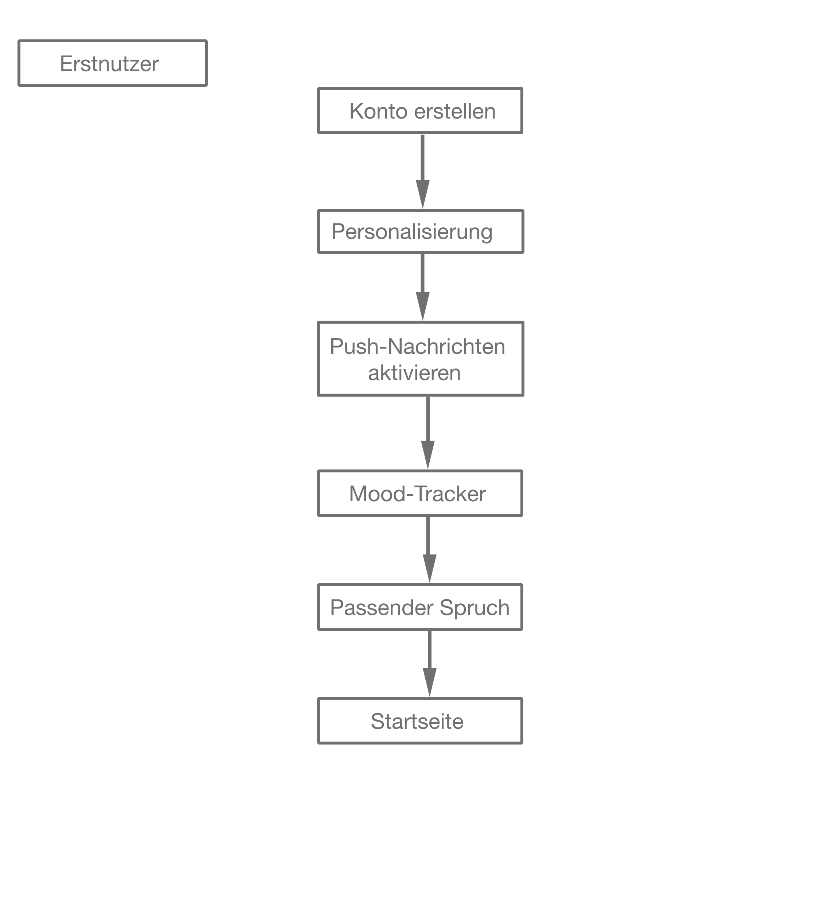

3.Umsetzung
Konkretisierung unserer Gedanken und Umsetzung:
Nachdem wir uns für das Thema Liebeskummer entschieden haben und eine Zielgruppe festgelegt haben,
ging es daran, die Ziele und Funktionen unserer App zu definieren. Hierfür haben wir erste Moodboards
erstellt und unsere Zielgruppe in einer Umfrage befragt. Mit der Umfrage wollten wir herausfinden,
welche Funktionen einer Person wichtig sind, die gerade Liebeskummer durchlebt, und welche
Unterstützungen sie sich wünscht.
Sitemap:
Darauf hin haben wir eine Sitemap erstellt, in welcher wir die Funktionen unserer App festgelegt
haben und angeordnet haben.

Erste Wireframes und Wissen zum Thema Liebeskummer:
Ebenso haben wir die ersten Wireframes erstellt und Wissen zum Thema Liebeskummer und
Selbstbewusstsein gesammelt.
Inhatliche und grafische Umsetzung
Im nächsten Schritt ging es nun um die inhaltliche und grafische Umsetzung. Hierfür haben wir
zunächst ein Styleguide erstellt, der alle Design- Aspekte beinhaltet. Ebenfalls haben wir ein
Schriftzug und ein Logo für unsere App erstellt. Ebenso haben wir u.a. die Tagebuchvorlagen
erstellt, die Challenges und Übungen konzipiert, den Mood-Tracker erstellt mit den Herzen, Sprüche
für den Mood-Tracker rausgesucht und generell den Inhalt generiert und in die Wireframe und Design
übernommen.
Zum Schluss haben wir das Design auf die Wireframes übernommen. Zusätzlich haben wir Aktionen
eingebaut, welche die Funktionsweise unserer App Aurora verdeutlichen sollen.